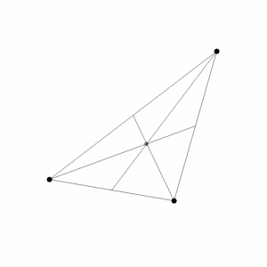

The Three Body Problem¶
In this example we will tackle the simple yet famous Three Body Problem. The problem is to find the trajectories of three bodies in a two-dimensional space. The three bodies are assumed to be point masses and are subject to the gravitational force of each other.
This problem is simple in the sense that the equations of motion are relatively simple. However, the problem presents numerical challenges due to the fact that the system of ODEs could be extremely stiff. This is due to the fact that the gravitational force is inversely proportional to the square of the distance between the bodies. This means that the force between two bodies can be very large when the bodies are close to each other. This can lead to very large accelerations and velocities. This can cause the numerical integration to become unstable. In addition, the problem is also very sensitive to the initial conditions. This means that even small perturbations in the initial conditions can lead to very different trajectories. For this reason is one of the most used test problems for numerical integration methods.
Problem statement¶
The equations of motion for the Three Body Problem are derived from the Lagrangian:
The equations of motion are then derived by taking the partial derivatives of the Lagrangian with respect to the generalized coordinates and setting them equal to zero. The equations of motion written as a system of first order ODEs are then:
where the distances between the bodies are defined as:
and \(G\) is the gravitational constant, \(m_1\) is the mass of the first body, \(m_2\) is the mass of the second body, and \(m_3\) is the mass of the third mass. A feasible set of initial conditions for creating a remarkable stable orbit (infinity shaped like) are:
where \(G = 1\), \(m_1 = 1\), \(m_2 = 1\), and \(m_3 = 1\).
{kind=link}
Load the ODE¶
Consider the implicit ODE defined in the previous section and define the
class for the ODE to be integrated in the file ThreeBodyProblem.m. Notice that
the class ThreeBodyProblem derived from the base class ODEsystem. The
content of the file ThreeBodyProblem.m, will contain the methods F and JF
for the evaluation of the system of ODEs and its Jacobian matrices with respect
to the state variables and their derivatives, respectively.
For more details on the implementation of the class ThreeBodyProblem please
refer to the file ThreeBodyProblem.m. If you are interested easier implementation
of the ODE system, please refer to the other examples present in the documentation.
Instantiate the ODE¶
Having ThreeBodyProblem.m now can instantiate an ODEsystem class instance
with the desired parameters, e.g. the gravitational constant and the masses of
the masses of the bodies:
G = 1.0; % Gravitational constant
m_1 = 1.0; % Body 1 mass
m_2 = 1.0; % Body 2 mass
m_3 = 1.0; % Body 3 mass
ODE = ThreeBodyProblem(G, m_1, m_2, m_3);
Choose solver¶
Choose a suitable solver for the ODE system. In this example we will use the
ExplicitEuler solver, not because it is the best choice, but because it will
allow us to visualize the drift of the numerical solution. After the solver is
instantiated, attach the ODE system to the solver by calling the method set_ode
method of the solver class:
solver = ExplicitEuler(); % Initialize solver
solver.setODE(ODE); % Attach ODE to the solver
Integrate¶
Select the range and the desired sampling steps for the numerical solution:
d_t = 0.005; % Desired time step (s)
t_ini = 0.0; % Initial time (s)
t_end = 6.32591398; % Final time (s)
T_vec = t_ini:d_t:t_end;
Notice that the period of the orbit is \(T = 6.32591398\) and the sampling step, choosen \(\Delta t = 0.005\), is small enough to capture the orbit period without making the numerical solution drifting too much. Of course, the sampling step can be reduced to obtain a better numerical solution but it will increase the computational cost. If we try to increase the final time of the integration, the numerical solution will drift away from the orbit more and more as the time increases.
For the initial condition we will use the initial condition given in the initial section:
x_1 = 0.97000436;
x_2 = -0.97000436;
x_3 = 0.0;
y_1 = -0.24308753;
y_2 = 0.24308753;
y_3 = 0.0;
u_1 = 0.93240737/2;
u_2 = 0.93240737/2;
u_3 = -0.93240737;
v_1 = 0.86473146/2;
v_2 = 0.86473146/2;
v_3 = -0.86473146;
X_ini = [x_1, x_2, x_3, y_1, y_2, y_3, u_1, u_2, u_3, v_1, v_2, v_3];
Finally, we can integrate the ODE system by calling the method solve of the
solver class:
[X, T] = solver.solve(T_vec, X_ini);
Now the matrix X contain the solution of the system of ODEs at each time step
in the vector T.
Extract solution¶
To extract the solution at each time step, we extract each row of the matrix
X and store it in a vector:
x_1 = X(:,1);
x_2 = X(:,2);
x_3 = X(:,3);
y_1 = X(:,4);
y_2 = X(:,5);
y_3 = X(:,6);
u_1 = X(:,7);
u_2 = X(:,8);
u_3 = X(:,9);
v_1 = X(:,10);
v_2 = X(:,11);
v_3 = X(:,12);
Plot solution¶
Finally, we can plot the solution of the system of ODEs. For more details on the plotting of the solution, please refer to MATLAB online documentation.